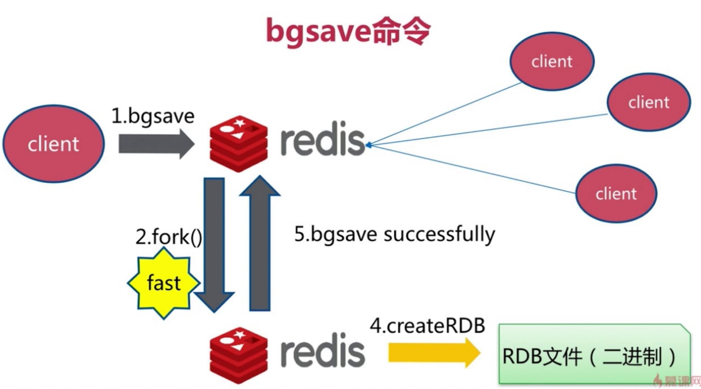
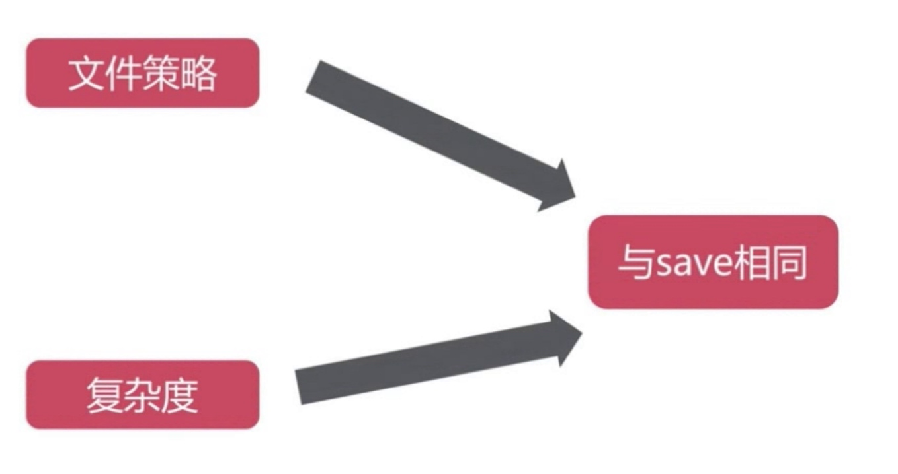
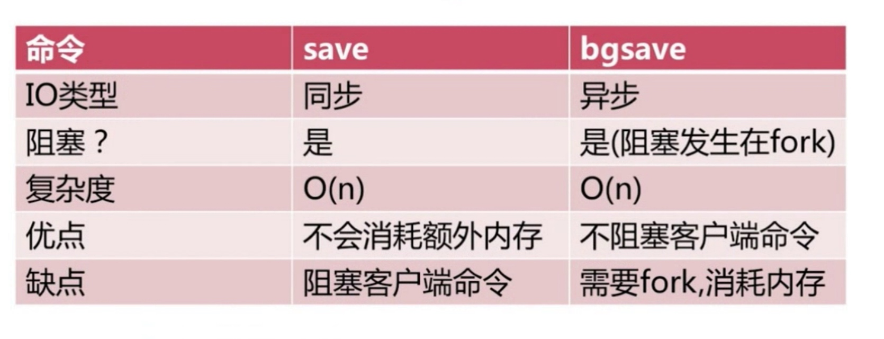
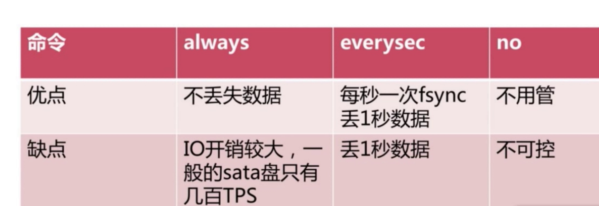
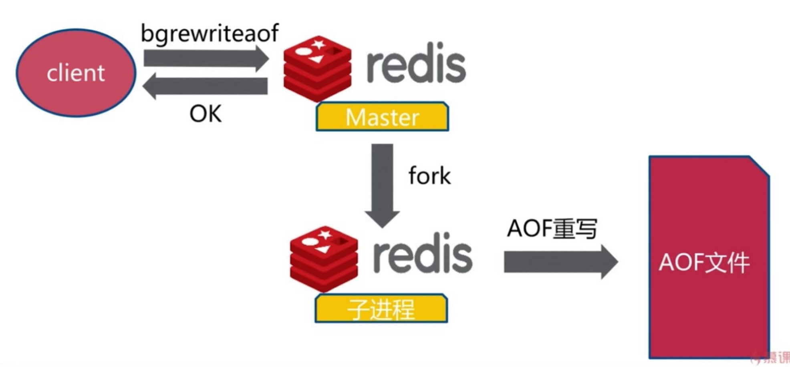
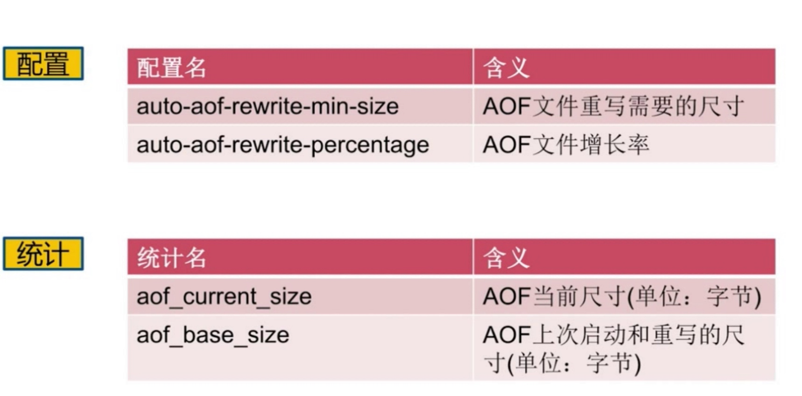
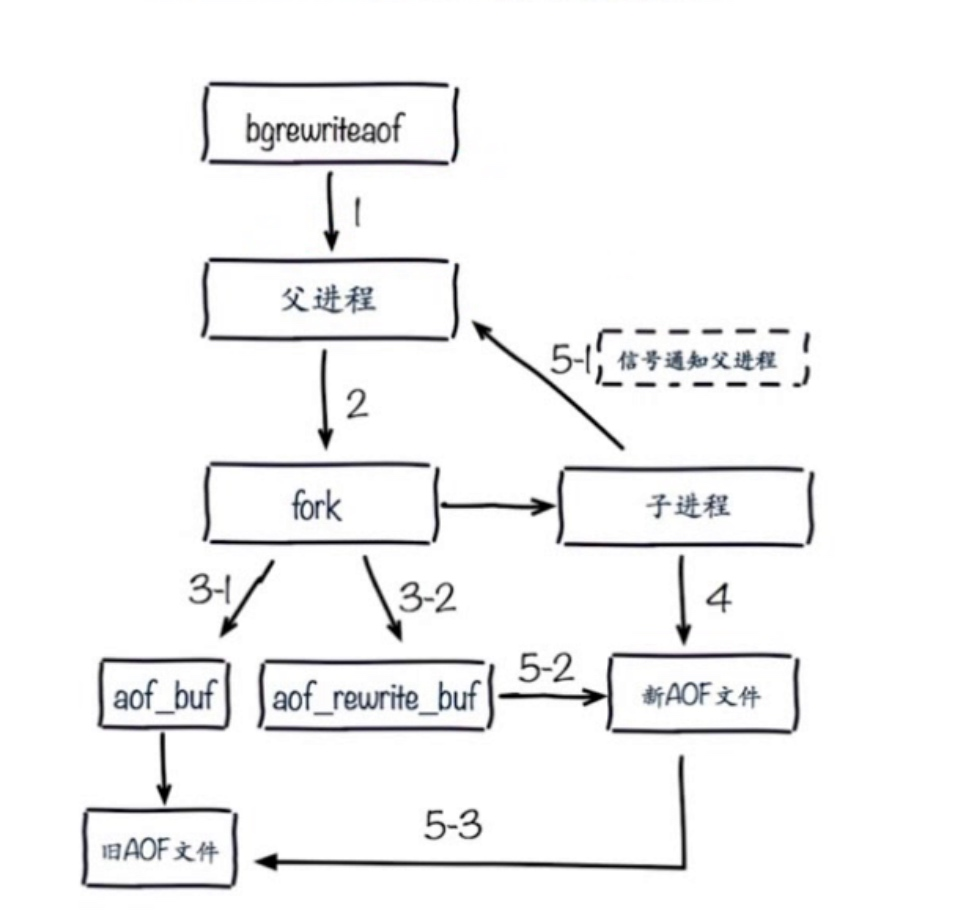
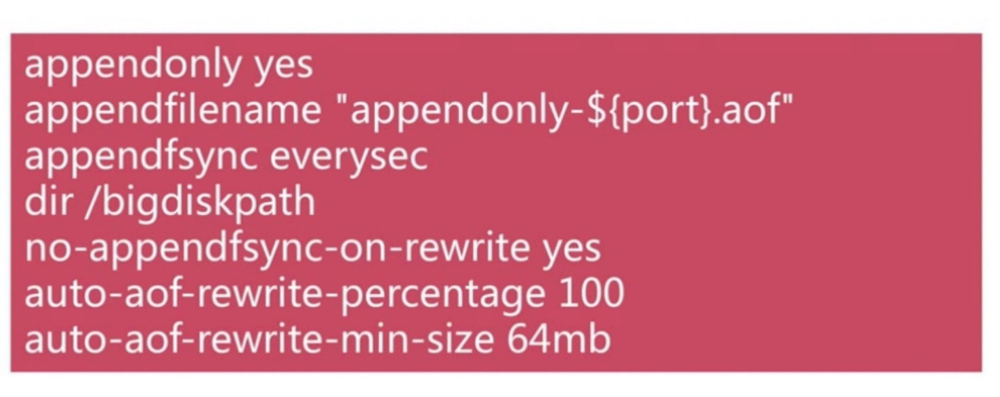

作用
持久化
RDB
- 触发机制 save 同步阻塞
- bgsave 异步
- 自动
save
- 文件策略 存在老的RDB文件，新替换老的 O(n)
bgsave
- 
- fork 会阻塞redis
- 
- 对比
- 
自动生成RDB
stop-writes-on-bgsave-error yes
rdbcompression yes
rdbchecksum yes
save 900 1
save 300 10
save 60 10000 关闭
dbfilename dump-${port}.rdb
dir /bigdiskpath
触发机制
- 全量复制
- debug reload
- shutdown
- info memory
总结
RDB不足
AOF
- always 每条命令
- everysec 每秒
- no OS决定刷盘
- 
- 重写
- 过期重复命令优化
- 减少磁盘占用
- 加速恢复速度
- bgrewriteaof 内存中操作
- 
- auto-aof-rewrite-min-size
- auto-aof-rewrite-percentage
- 
- 重写流程
- 
- 
- no-appendfsync-on-rewrite重写的时候不要进行aof操作
- aof-load-truncated yes是否忽略错误
RDB和AOF
- RDB 关
- 集中管理
- 主从 从开
- AOF 开 缓存和存储
- AOF重写集中管理
- everysec
最佳策略
- 小分片
- 缓存和存储
- 监控 磁盘 内存 负载 网络
- 足够的内存